|
Chapter 4: Object Relationships |
In this chapter, we provide further apparatus for capturing the static dimension of a system or domain of interest. In the previous chapter, we looked at objects in isolation. Here we consider static regularities among objects. We discuss relations in the tradition of entity-relationship (ER) modeling . An example is the Ownership relation that connects objects in the class Client and objects in the class Account.
A relationship may be seen as a named family of typed tuples. They are typed in the sense that the nth element in a tuple is an instance from a specific domain or class. The signature of a relationship is just a listing of these types. For example, the signature of the Ownership relationship is ( Client, Account) since it has a family of 2-tuples where the first domain is the class of Clients and the second domain is the class of Accounts.
Following the tradition of the data modeling community and other OOA methods, a diamond is used to depict a relationship in our graphical notation. A diamond is connected via edges to the domains of the tuple elements. Obviously, we will always have at least two edges. For example, to indicate that class Client and class Account are connected by the relationship Own:
In the same way that we may want to refer to particular instances of classes in a particular target system, we may want to express that certain instances actually belong to a relationship. For example, we may want to express that a particular client owns a particular account. An instance of a relation is represented with a diamond containing a filled circle:
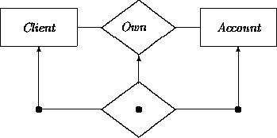
Graphical notation can sometimes cause an ambiguity when a
relationship connects identical domains. For example, the
Supervise relationship between two Persons is described in
textual representations by ordering the arguments, as in:
Supervise(Person, Person).
We can agree that the first argument represents the supervisor and the
second argument the ``supervisee'' (person that is being supervised).
To avoid ambiguity in diagrams we can add role names, as
in (letting Spv stand for Supervise):
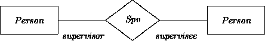
The arity, or number of elements in the signature is another way of classifying relationships. Binary relations (such as Own and Supervise) have tuples of length two. Ternary relations have tuples of length three. Examples include:
We can have relations with tuple lengths larger than three as well. Graphically, more than two edges are obviously required for relationships with arity greater than two. For example, we may construe Transfer as a relation among a pair of accounts, an amount, and a date (letting Trans stand for Transfer(fromAccount, toAccount, amount, date)):
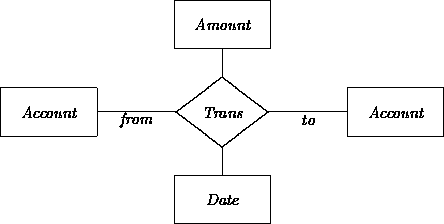
In Chapter 3, we attached features to attributes in order to capture more semantics. Similarly, features can be attached to the tuple domains of a relationship.
Consider a domain in which an account cannot have more than one owner. This means that a particular instance of Account can occur not more than once in an Own tuple. Cardinalities (the relational versions of multiplicities) may be used to indicate such properties. Here, we can add the cardinality notation [0:1] to the diagram:
Alternatively, we could express that each client can own one to multiple accounts and each account can have one to multiple owners:
As another example, we may want to express that a peculiar group of *Client*s have at least three but at most five accounts with:
The date that a client becomes a customer may be described as a relationship. Each client must have exactly one start date. A client may have started on the same date as another client. Letting CsSn stand for CustomerSince(Client, Date):
Relationships may be classified according to their technical properties. See any discrete mathematics text (e.g., [4]) for fuller descriptions of properties including:
In the same way that constraints provide supplementary information about simple attributes, additional constraints may express restrictions on the allowed instances of a relation. For example, we can rephrase the fact that instances of class Person have the attribute spouse as a binary relationship Spouse between Person and Person (assuming the spouse attribute has been eliminated from class Person):
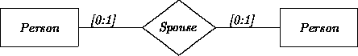
The [0:1] cardinality captures a monogamy restriction.
As before, we may want the ability to express age restrictions on the Person tuple elements. We omit notation conventions for expressing these constraints; see Chapter 3 for suggestions.
The instances of one relation, or more commonly, the attributes of a class may be constrained to be instances of another relation. For example, consider a simplified Family class containing (only) one parent and (only) one child attribute, along with a binary relationship Custody capturing the fact that one person has custody over another person.
We would like to express the constraint that in each Family, the parent must have custody over the child. This requires that the parent and child must also be instances of the Custody relationship. However, simple relation instances cannot be used to state this. They indicate the existence of particular instances of a relation. We need here a way to say that any persons in the parent and child roles must also be instances of the Custody relationship. This leads to the concept of a parametric relation instance (see [1]). ``Parametric'' in this context refers to the fact that the exact identity of the relation instance is a variable (parameter), different for each instance of class Family.
We indicate parametric relation instances (PRIs) with an open dot. For example, the following diagram says that the parent and child in a Family must be members of a Custody relationship. The relational constraint applies to all instances of the class:
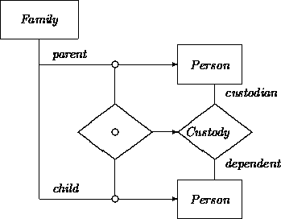
[Note that the Person boxes in this diagram are used in two different ways, as attribute domains and as relation domains. For further economy at the expense of readability, we could have drawn only one Person box, used in four ways.]
The parametric relation instance places constraints on the instances of Family that one may construct. If we wanted a class in which the parent is not always the custodian, we might for example introduce another attribute, nonCustodyChild with the same value domain Person.
Collections represent groups of objects. They may be employed when describing those objects that fall under a common relationship or need to be manipulated in a common fashion.
Sets are the most well-known and useful kinds of collections. We have introduced sets indirectly in the scope of regular classes. Any multivalued attribute has a set for its domain. Sets may also be employed explicitly as primitive notions (cf., [2]). We restrict ourselves to typed sets where all elements of the set belong to an indicated class (including subclasses of that class -- see Chapter 7).
A set is to be distinguished from a class. A set must be defined in
an extensional way, by construction, optionally in combination with
a filtering characterization. Thus we exclude here intensionally
defined subclasses, such as:
Accounts with a balance over $1000,
but we include:
Accounts in our database with a balance over $1000.
Other examples include a branch with an attribute representing a set of its local accounts (if this association is not represented as a relationship) and similarly for the local clients of a branch.
Once we have sets, we can open the floodgates and adjoin to our
representational apparatus the notations that are
available in set theory. These include:
for intersection,
for summation,
 for subtraction,
for subtraction,
for the subset relationship,
for the superset relationship.
We denote sets by expressing their domains as ``arguments''. For example, a set of branches is denoted as SET(Branch). Observe that we now have two ways to describe multivalued attributes; sets and multiplicity features. The following two depictions may be treated as equivalent:
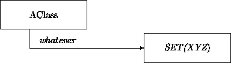
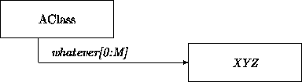
Multiplicity and set notations may be combined, for example, when we introduce multivalued attributes where each individual value is a set. In the following example the class School treats its faculty as an undifferentiated set of employees and treats the student body as a family of sets of students:
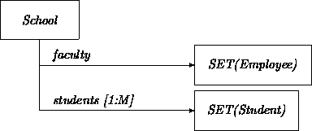
When a multivalued attribute would have more specific multiplicity bounds, as in [3:7], the corresponding set notation may be annotated accordingly in any agreed on manner.
If necessary, the analyst is invited to employ other collection notations and the usual operations associated with them:
Additional collections and related constructs may be defined as generic classes. These classes capture the commonalities of a broad range of other classes. Inheritance (see Chapter 7) is an excellent mechanism to exploit abstract classes and create more specific versions. Generic classes instead use the style of procedure or function variables to express genericity.
Our notations for sets and other collections are special cases of that for generic classes. By convention we use upper case names for generic classes. For example, the following generic class QUEUE has instances with elements of type X.
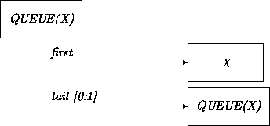
When the class Job happens to be around, we can introduce the class QUEUE(Job).
Analysts often have some freedom in whether to use classes versus relationships to represent static features of a domain. The notion of Transfer is an example. It was represented as a class in Chapter 3 but as a relationship in this chapter.
The main consideration is that classes and relationships describe different kinds of instances. As defined in Chapter 2, objects (class instances) have identity, features, and operators that may change state across time and communicate with other objects. Instances of relationships do not necessarily share these properties. A relation instance need not be ascribed an independent identity. It may be fully characterized merely by listing the elements of the tuple. Relation instances need not have any intrinsic properties outside of those of the tuple. And they cannot change state or communicate with other objects at all.
Analysts may choose the approach that appears most appropriate to the task at hand. When aspects of a purported relation appear class-like, or vice-versa, descriptions may change accordingly.
The ways in which classes and relationships are defined also differ. Classes list the central defining characteristics of identifiable objects in a domain. As noted in Chapter 3, classes provide intensional descriptions of objects by listing their defining properties rather than their members.
Like sets, relationships are normally described in a partially extensional fashion. Most relationships describe tuples corresponding to the state of affairs in the ``world'' and are determined by circumstances. Thus, they have been obtained by some form of observation. The Ownership relation is an example. In this case, the family of tuples is simply a set, and in practice is a ``small'' finite set. For all practical purposes, relational modeling deals only with extensionally defined relations in which the family of tuples is small and can conceivably be handled by storage media that will satisfy resource requirements constraints.
While a useful guide, this distinction does not intrinsically separate classes from relationships. Intensionally defined relationships may provide a definition (e.g., a predicate) that characterizes which tuples belong to the relation and which do not. Grandparenthood defined as being the parent of a parent is an example. Another example from the realm of math is the successor relationship relating every natural number N with its successor N+1. Here, the family of tuples is still a set, although not small and in fact of infinite size. Relationships where the family of tuples is not a set any longer are possible as well.
In Chapter 3, we mentioned that an attribute may be seen as a special binary relationship between the central object and an entity in the value domain. As a result of the similarity between attributes and binary relationships, an analyst must take care not to prematurely absorb binary relationships into a class definition.
The main conceptual issue is whether a feature is definitionally intrinsic to an object. One question to ask is whether every instance of a class is necessarily related to a member of the other
domain. In this case it is normally a genuine attribute; in other cases it is better represented as a relationship. On the other hand, one should be pragmatic as well. For example, in spite of the existence of Gliders, it makes sense to see Engine as a [0:M] (multivalued) attribute of Airplane. Consequently, Gliders may be described as effectively lacking the attribute Engine by giving them the multiplicity feature [0].
A related question is whether one object is conceptually ``in control'' of the values assumed in the other domain. This generally corresponds to whether an object may contain transitions (see Chapter 5) that directly change the value. If so, it is appropriate to list it as an attribute. For example, in Chapter 3 we listed the ``relationship'' between an Account and the Number representing the current balance as an attribute. Account objects are in control of their own balances, may alter them within transactions, etc.
As another example, in Chapter 6 we will introduce acquaintance relations describing the partners in object interactions. In order to describe the behavior of an object in its full generality, independent of the role it may play in a particular target system, we may need to describe a handle to another, as yet unknown, object with which it needs to interact. Binary acquaintance relations serve this need. However, when one object must be able to determine its partner(s), this information may be listed in attribute form.
Functional relationships (or just ``functions'') represent the meeting point of these considerations. A tuple component of a relation depends functionally on the other components if its value is uniquely determined by the other components. The cardinalities [0:1] and [1:1] for any of the domains indicate a functional dependency. The cardinality [0:1] reflects a partial function that need not ``hit'' every element in the domain.
For example, the following diagram indicates that every person has precisely one mother, and every mother has at least one child. Letting Mo stand for the MotherOf relation:
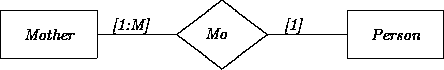
Functions are among the most common kinds of relationships. In functional relationships, at least one direction of the relation associates a single element of one domain to those in the other. It is convenient and often reasonable to treat them as attributes in functional direction if this appears central to the definition of the class. In this sense (as exploited in design -- see Chapter 16) all attributes are functions. For example, to indicate that each person must have a mother:
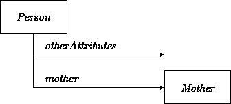
Similarly, consider the MaintainedBy(Account, Branch) relation saying that an account must be maintained by one branch, and a branch maintains at least one, possibly more accounts. This could be described as a functional relationship (letting MnBy stand for MaintainedBy):
Alternatively, the Account class could have an attribute maintainer with domain Branch. The ``other'' direction in a functional relationship may also be described as an attribute when this contributes to the definitional characterization of a class. However, in this case, the attribute normally has a SET domain. For example, each Branch could have an attribute maintainedAccts with domain SET(Account).
More generally, any binary relationship may be described with a pair of possibly set-valued functional attributes (one per domain) when it is meaningful to do so. However, the ``equal partnership'' implicit in the idea of describing pairs of functional attributes is better captured as a relationship proper.
The extreme case of a functional relationship is a one-to-one function, where the cardinalities of both domains are [1:1]. In this case, each element of one domain is ``matched' with a unique element of the other. (If one of the domains has cardinality [0:1], this instead represents a partial one-to-one function). For example, the ``relationship'' between an Account and its accountNumber is one-to-one, as would be a relationship between Departments and Managers saying that each department has a unique manager and each manager manages a single department. These relationships are most naturally captured as attributes. When doing so, attribute multiplicity notation may be extended as [1:1]-[1:1], or abbreviated as unique to indicate this property.
We summarize these classifications by showing how some standard function categories are described as attributes:
Relationship modeling captures generally static connections between objects. Relationships may be distinguished across dimensions including arity, domains, and cardinality. Relationship notation may be embellished with additional features and constraints. Collections, especially sets, may be used to describe groups of objects bearing a common relationship or role.
Relationships have been treated extensively in relational database theories and generic entity-relationship modeling; see for instance Ullman [6] and Maier [3].
Relationships are widely employed in OOA methods. As discussed in Chapter 3, attributes are avoided in Embley et al [2]. Instead they emphasize the importance of relationships. They also describe set membership as a relationship between two classes where one provides the ``raw material'' instances and the other represents the sets constructed from them. Wirfs-Brock et al [7], describe several special relationships including PartOf, DependsUpon, HasKnowledgeOf, IsAnalogousTo, and isKindOf. Relationships are not employed directly in the OMT method of Rumbaugh et al [5]. They use the similar concept of associations instead.
Identify objects, introduce their classes, give attributes, their features and constraints as suggested by the following text:
Mr. White is married. He teaches OO Software Engineering classes on Fridays. He is a part-time member of the faculty at the CS Department of the All-Smart Institute. His 23-year-old son John was enrolled in the OOA class that Mr. White taught in the previous semester. John does not like broccoli. Mrs. White uses a ten-speed for transportation to and from the campus (she teaches Philosophy at the same institute). Class size is limited at the institute to 14 students. The faculty at the institute, when seen as parents, have at most two children. The sister of John has a boyfriend that is two years younger than she is and plays two different instruments.